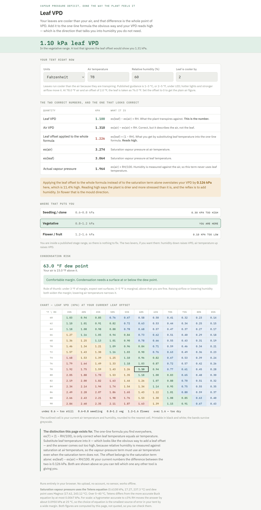
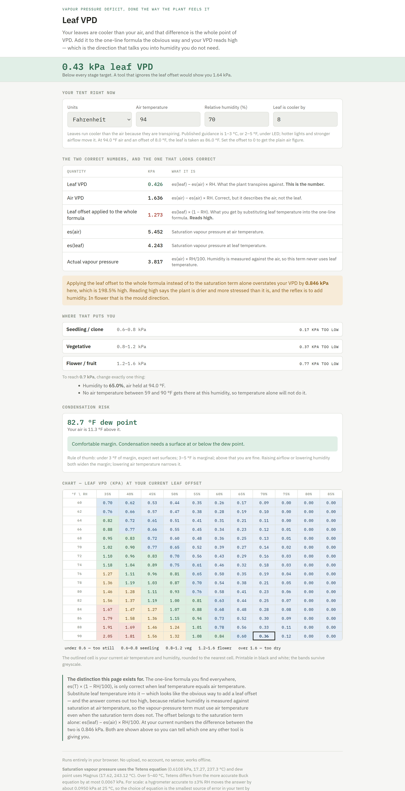

The universal one-line VPD formula is only correct when leaf temperature equals air temperature. It never does. This one takes the offset properly.
Captures of the real page with its own defaults, and with a warm high-humidity tent dialled in. Nothing is mocked up. Every figure shown is what the page computes, and the harness that ships alongside it re-derives all of them against a separate implementation.
What it looks like

The default view. Air temperature, humidity and a leaf offset in, VPD out — with the breakdown, the stage bands, the dew point, and a chart of the surrounding temperature and humidity range so you can see which way to move.

Why the offset matters, at 94 °F and 70% RH with leaves 8 °F cooler. The leaf-aware answer is 0.43 kPa. The one-line formula everyone quotes gives 1.27 kPa — an overstatement of 0.847 kPa, which reads as a badly stressed plant when it is not. The reflex is to add humidity, and in flower that is the mould direction.
How it was checked
274 assertions drive the real page in headless Chrome, and the independent side does not reproduce the page's formula — it recomputes from the physics separately, so a shared algebra mistake cannot pass both.
The three forms must collapse to exactly equal at zero offset, and do, to 1e-9.
125 combinations of temperature, humidity and offset confirm the naive form reads high in every one — largest overstatement 0.847 kPa.
Tetens versus Buck is quantified rather than hand-waved: max deviation 0.0067 kPa over 5–40 °C, against 0.0950 kPa for ±3% hygrometer error — the equation choice is 14× smaller than your sensor's error.
The harness asserts the assertion count printed on the listing equals the count that actually ran, and that the delivered file is byte-identical to the tested one.
Not included
The leaf offset is a setting, not a measurement. An infrared thermometer is the only way to know yours. Typical is 1–3 °C cooler than air, and the page defaults conservatively.
It is not a sensor and it controls nothing. It is a calculator: numbers in, a number out.
The stage bands are grower convention, not physics. They vary by source and by cultivar, and the page says so where they are shown.
It uses the Tetens/Magnus form, not Buck. The deviation is stated above so you can judge it rather than trust it.
Get it
Leaf VPD — $3
One HTML file. Runs entirely in your browser: no upload, no account, works offline once the page is open.